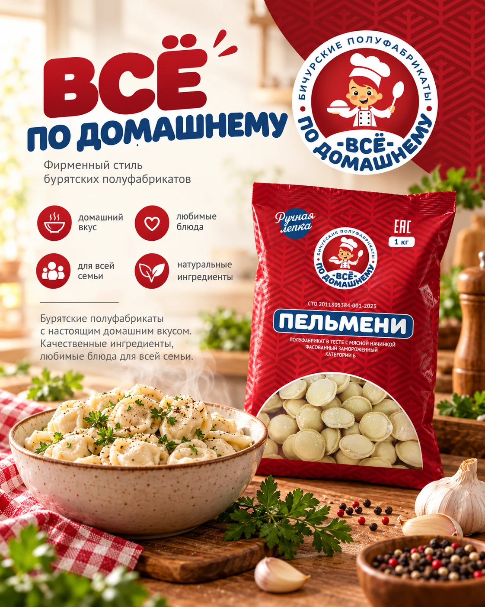
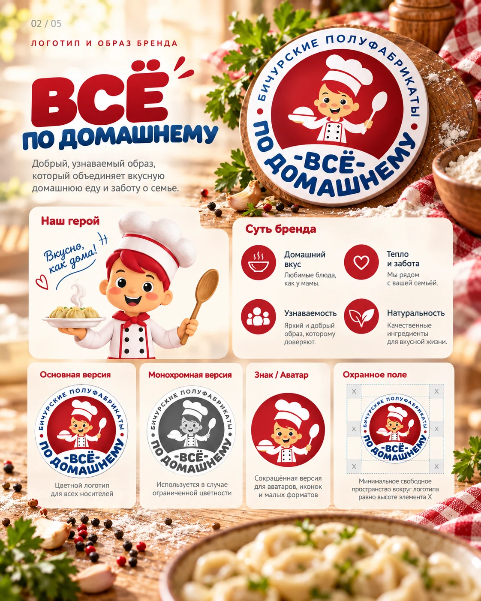
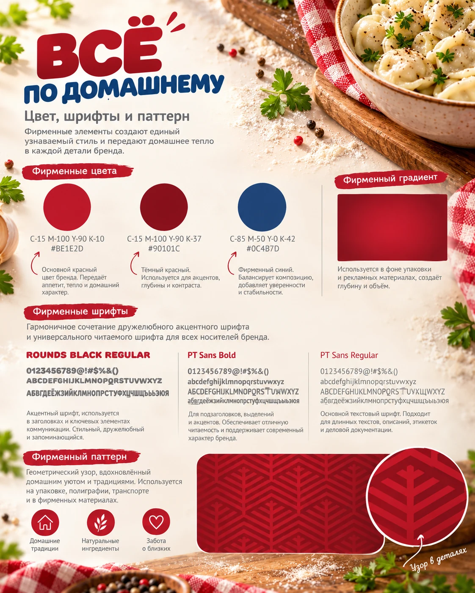
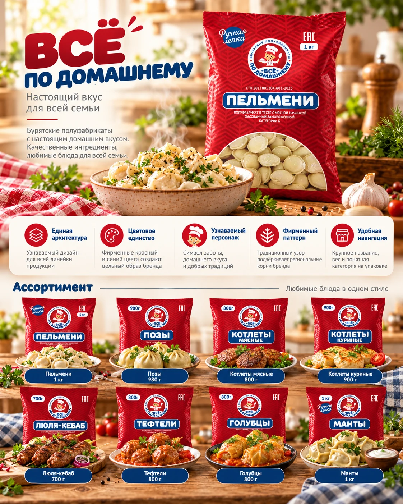
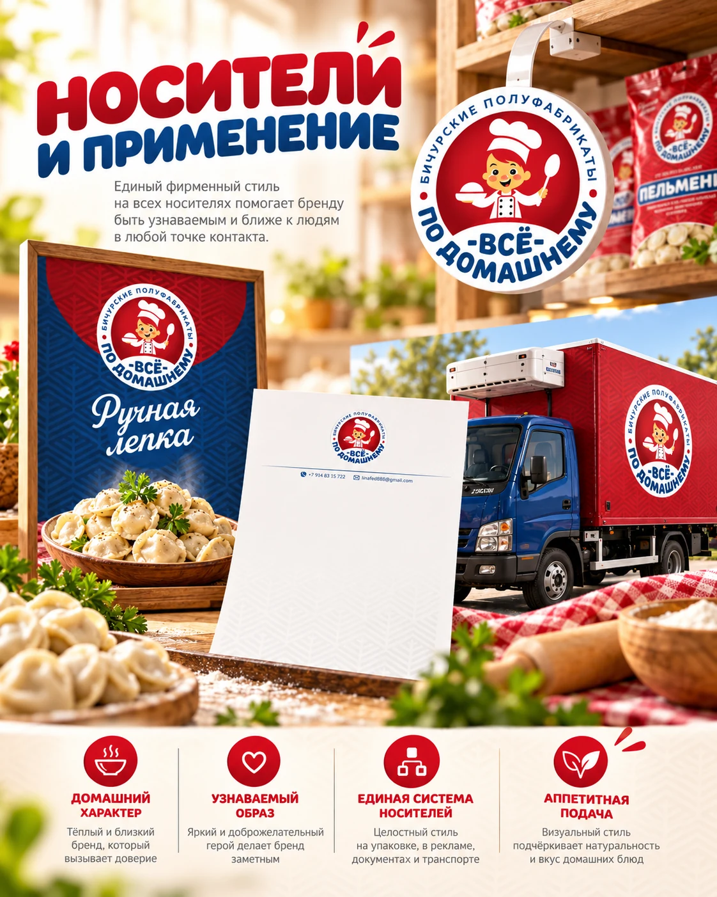

ЛОГОТИПЫ / ФИРМЕННЫЙ СТИЛЬ
Всё по-домашнему
Логотип и фирменный стиль продуктового бренда: цвет, графика, паттерн, оформление ассортимента и носителей.





ЛОГОТИПЫ / ФИРМЕННЫЙ СТИЛЬ
Логотип и фирменный стиль продуктового бренда: цвет, графика, паттерн, оформление ассортимента и носителей.




